Learning objectives
- Understand and use basic
gitcommands for version control - Develop a mindset and approach to set up and manage a version controlled project
- Identify best practices for using
gitcollaboratively
This lesson assumes you have:
- Set up a Github Account
- Installed
giton your computer locally
The case for version control
As water data scientists, we will work independently and with others on documents, data, and code that change over time. Version control is a framework and process to keep track of changes made to a document, data, or code with the added bonus that you can revert to any previous change or point in time and you can work in parallel with multiple people on the same material. In this module, we will practice version control with git, which is perhaps the most common version control system available today.
The important difference between using a tool like git and Github versus cloud-based services (e.g., Dropbox, Google Docs) which are in a way, version control systems, is the ability to control exactly what changes and/or files get “versioned”. These versions are snapshots of your work with unique identifiers along with a short commit message, which allows us to restore these changes at any point in time. Thus, git offers much finer control over specific changes by specific users; this makes version control a very powerful tool (as well as a computer lifesaver when things go awry!).
What is the difference between git and Github?
gitis a version control program that is installed on your computer with associated commands we use to interact with version controlled files.
- Github is a website that interfaces with
gitand allows us to store/access/share our files as repositories1.
There is a rich and complex set of tools and functionality with git and Github, but in this module, we’ll focus on the basics and link to more material.
Using version control
Some folks may just use version control as another way to backup their work2, but version control really shines when working on a collaborative project. For example, many are familiar with the situation below:

{kind=link}
The comic above shows a single thesis document, but really the situation isn’t any different than a big data analysis project. A common series of steps that are generally taken by multiple people, may include:
- Download/gather data
- Clean/transform data
- Analyze and visualize data
- Produce a front facing product or report
Many of these tasks (or subtasks) may overlap or depends on one another. Complex collaborative projects require forethought in how to set things up so everyone can seamlessly stitch their contribution into the overall fabric of a project without holding up the process for other team members.
Pause and Discuss!
If you had 10 people to work on a big project with steps outlined above, how would you approach it? How would you break out these pieces or subtasks? How would you track progress?
This module will cover version control with git, including the basic commands, but it’s important to remember:
Understanding and learning how to approach, setup, and implement collaborative projects with version control are just as important as learning
gitcommands
Thus, successful version control is not just about effectively using tools like git, but also developing skills to organize projects, collaborate with others, and implement version control so it’s useful (not just another way to back things up…see below).

Learning git through a project
Sometimes the best way to learn is to walk through a real-world example. Let’s walk through a simplified example of a common set of tasks a team may face using R and learning git along the way.
Let’s imagine we have a team, Jo and Mo. Each has a unique skill set, and each knows how to use R and git. The team is tasked with downloading and visualizing flow data for a specific river gage to provide status report updates on a monthly basis, which are used for various regulatory actions (i.e., how much water is available for diversion, how flows relate to period of record averages, etc). In this case, the cloud is Github where our main repository lives. More on this in a moment. First we need to make sure everything is setup and installed before we begin our git project!

Figure 1: An example team and workflow.
Setup git locally
We highly recommend Jenny Bryan & Jim Hester’s happygitwithr website because it covers everything (and more) that you may encounter when using git with R. In particular, please take a moment to check/update your git installation and configure Github. The following links will help with this:
The {usethis} package is an excellent option to help you get things setup within R, like this:
library(usethis)
# use your actual git user name and email!
use_git_config(user.name = "yoda", user.email = "yoda2021@example.org")
Remember, we only need to do this once!3
Create a Repository
There are several ways to create repositories on Github and with RStudio4. We recommend the Github first option as it’s easiest to intialize and manage.
To begin, go to Github.com and login. From there, let’s create a new repository!
Challenge
Please take a moment and create a new repository on Github following the happygitwithr.com instructions.
- Name the repository
water-is-life - Check the Add a README file box at the bottom
- Make this a public repository
Click for Answers!
Hopefully you see something like this before you click the green Create Repository button.

And then afterwards, a screen like this:

The last piece to this is getting this repository which is currently in the “cloud” to a local copy on your computer. This is called cloning. To clone the repository to your computer, we need to do the following:
- Copy the repository address. Make sure you’ve clicked HTTPS and the link in the box starts with
https://. Copy that link to your clipboard.

- Now open RStudio and navigate to File > New Project > Version Control > Git
- In the Repository URL box, paste the link in, and hit
Tab. The Project directory Name should automagically fill with the name of the repository. Go ahead and put this where you want it to live locally5 and hit Create Project. Open in new session is optional, but allows you to keep existing projects open.
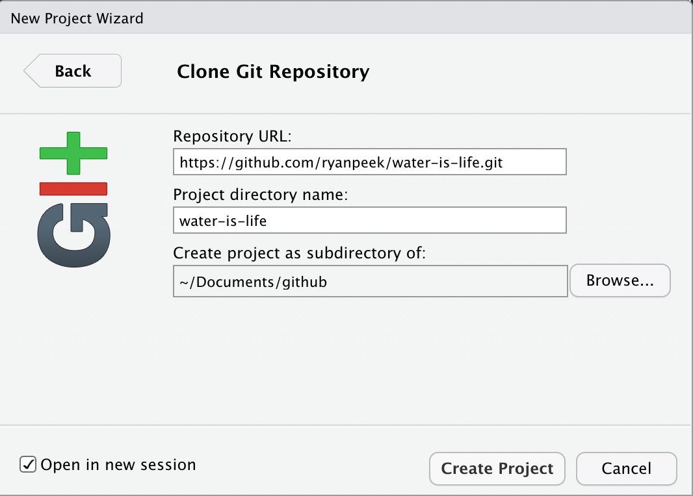
Great! We should now have an RStudio project that is version controlled with git, and there is a local copy we can work with on our computer.
Collaborative Github Settings
Since we are working on a collaborative project, we need to make sure our collaborators have access to make changes to our repository. So, if Jo created the repository, they would need to add fellow collaborators to the repository. Let’s do that now:
- Go to Github.com and login
- Navigate to your repository
water-is-life - Click on the
Settingstab in the upper right corner
Figure 2: Click on the Settings tab in the upper right corner to add collaborators.
- Click on
Manage Accesson the side bar on the left (you may need to enter your password or authentication again)
Figure 3: Then click on Manage Access.
- Click on
Invite Collaboratorand enter the username or email you want to add!

Figure 4: Invite collaborators by email or username!
Branches & Conflicts
Often when teaching git, we start with the basic commands. However, it’s important to consider one of the more powerful parts of using git is the ability to use branches. Branches, or branching, in git, is a way for multiple folks to work on the same repository independently, and a standardized way to integrate those changes back into the repository. Every repository typically starts with one single main branch. This is like the trunk of the tree, or the main train track. We can create additional branches off of this track, and if we want to merge them back in to make them available for our collaborators, we use something called a pull request. This is essentially a way to double check if there will be any conflicts between the work in the branch and the work in the main branch6, and it also provides a way to document and review any changes. If a pull request does not create merge conflicts (don’t worry about this now, we will cover it later) and if a collaborator on the repository approves the pull request, then the branch is “pulled” (or merged) into the main branch, and then typically deleted (since the branch has served its purpose, and the changes in it are now reflected in the main branch).

Figure 5: Example of multiple branches in a project splitting off the main branch
Create a branch
In our example we want to make sure we keep our main branch clean and up-to-date with changes we are happy with…all other work will go through a branch, pull request, review, and merge process to minimize conflicts or duplication of work.
Jo is a wizard at grabbing the data we want to work with and saving it in an organized way. She’s cloned the repository to her computer, and the first thing she wants to do is create a fresh branch to work off of, so her changes can be reviewed before being merged into the main branch.
We can create a branch in RStudio in one of two ways:
Tools > Terminal > New Terminaland look for the Terminal tab in RStudio. Click on it, and at the prompt, type:git checkout -b BRANCH_NAME.- Using the
Gittab in RStudio and clicking on theNew Branchbutton, type in the branch name, make sure the Remote is set tooriginand clickCreate!
Let’s create a new branch called jo_download_data. Ideally, each team member will do the same, and each of these branches comes from the main branch, which is the main trunk or “clean” version of the project.
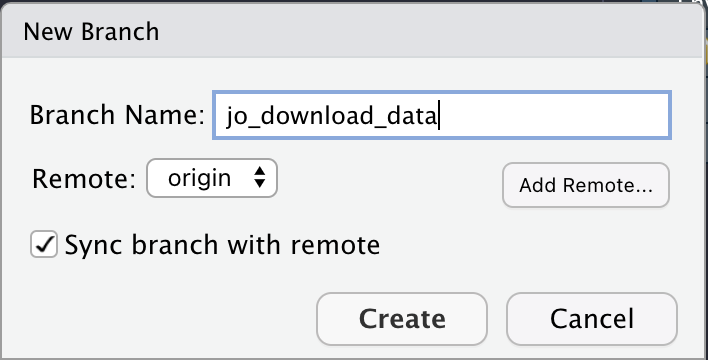
Figure 6: Jo creates a new branch from main to write a data download script in R.
Download Data: add, commit, push
Jo’s task is to download the data. Because this is a task that will need to happen regularly, she writes a function to download the specific river discharge data to an organized set of folders. She runs the function to get the most recent data, and saves it locally on her version of the repository!
As she works, the general process she follows is:
add: Do some work, add some files, scripts, etc. To version control these changes, we need to stage oraddthat work so it can be versioned bygit. We do this withgit add <my_file>or check theStagedbuttons in the RStudiogitpanel.commit: Add acommitmessage that is succinct but descriptive (i.e.,added water data files). These are the messages you’ll be able to go back to if you want to travel back in time and see a different version of something…so be kind to your future self and add something helpful.push: Finally, when we’re ready to send locally commited changes up the cloud, wepushthis up to the Githubremotecloud repository!
Remember, you can commit as frequently as you like, and push at the end of the day, or push every time you commit. The timestamp identifier is added with a commit message, not with the push.
You Try!
Take the following function and:
- Make a new folder in your project called
code, save as a script called01_download_data.R stageit (either through the Git tab, or viagit add),commit(add a message!),pushto thejo_download_databranch
library(fs)
library(dataRetrieval)
library(readr)
library(glue)
# make a function to download data, defaults to current date for end
# function: dates as "YYYY-MM-DD"
get_daily_flow <- function(gage_no){
# create folder to save data
fs::dir_create("data_raw")
# set parameters to download data
siteNo <- gage_no # The USGS gage number
pCode <- "00060" # 00060 is discharge parameter code
# get NWIS daily data: CURRENT YEAR
dat <- readNWISdv(siteNumbers = siteNo,
parameterCd = pCode)
# add water year
dat <- addWaterYear(dat)
# rename the columns
dat <- renameNWISColumns(dat)
# save out
write_csv(dat,
file =
glue("data_raw/nfa_updated_{Sys.Date()}.csv"))
}
# RUN with:
#siteNo <- "11427000"# NF American River
# get_daily_flow(siteNo)
Answers!
Once we’ve made our script and saved it in the code folder, we should see something like this in our Git tab… notice the change when the box is checked.
 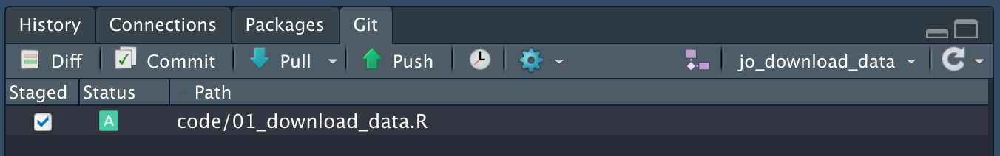
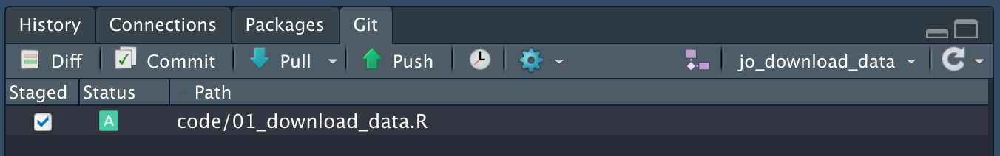
Next we want to commit and add a message. Note when we first click the Commit button, we’ll see this screen:
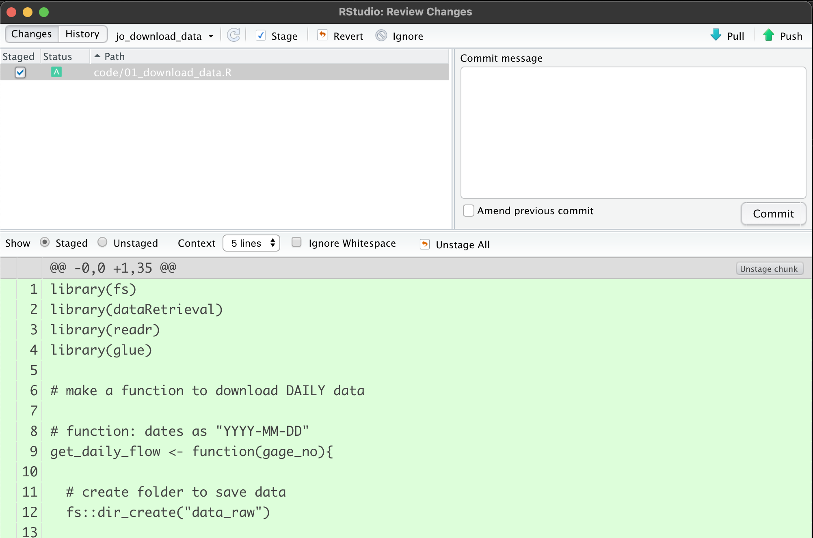
When we enter a commit message and click Commit, we’ll end up with this, which tells us our commit worked…but it’s still only local! Note we’ll have a message saying our branch is
ahead of origin/jo_download_data by 1 commit.
That’s ok, it just means we still need to push our changes up to the remote branch.
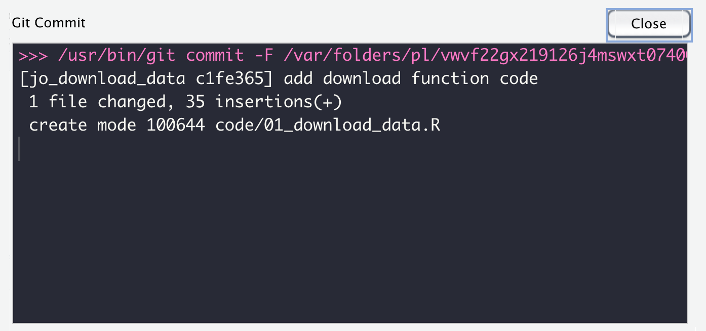
The final step is to push our changes up to the cloud. Click Push and you should get a message back like this. This means things worked…a final check would be go to Github and make sure the file is online!
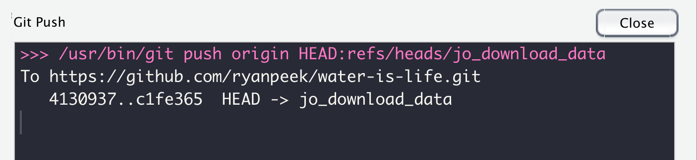
Pull Requests
The next step in this version control odyssey is to get Jo’s work from the jo_download_data branch into the main branch. Here we use a Pull Request. This is a way to review the changes, check for any conflicts (if for instance, folks were working on the same file), and then Merge these changes into the main branch. Then we can delete the jo_download_data branch, create another one to work on the next task, and so on.
Here’s what we might see on Github if we visited our water-is-life repository after we pushed our changes up. First, we will hopefully see an option to make a pull request because Github recognizes there are changes from another branch that aren’t in the main branch. We want to click the Compare and pull request button.
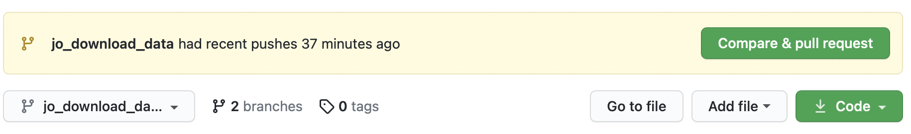
Next we have an option to add some additional descriptions, comments, about what this pull request (PR) is doing, and why. We can tag a reviewer (collaborator on the Github repo), and add labels, milestones, etc. These are all helpful for keeping track of what’s done and what’s not.

After we click the green Create pull request button, we should see something that looks like the following. Important! We ideally will see a green checkmark with a message "This branch has no conflicts with the base branch, which means, our main branch can easily merge this new work in!
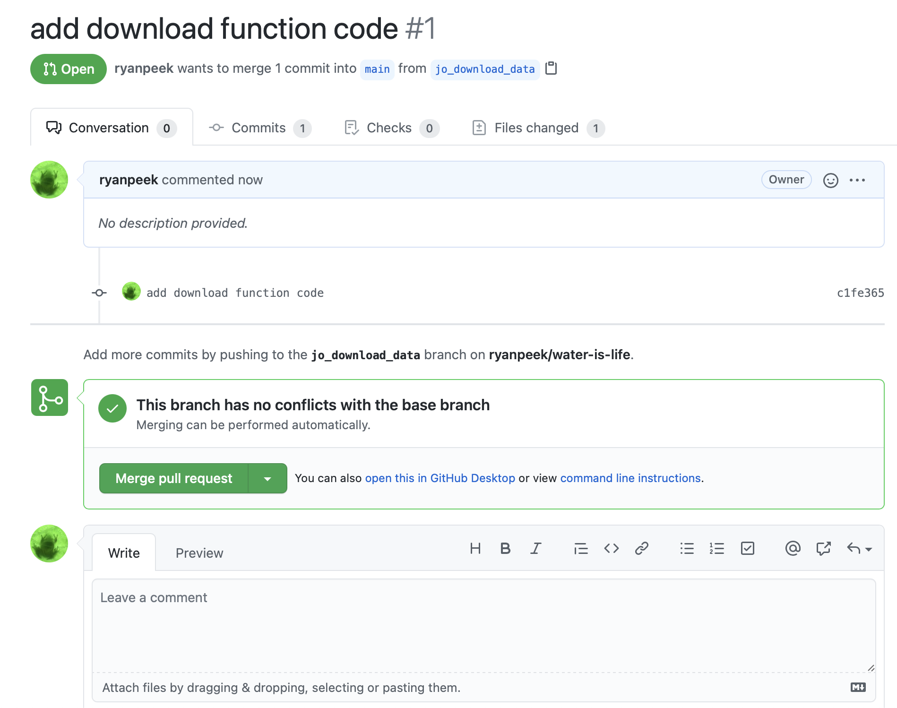
Go ahead and click Merge pull request, and wait until you see a screen shortly after that says the Pull request was successfully merged and closed!

fetch and pull
Now that Jo has completed the first part of the team task, we want to move to the second task, which is cleaning the data. Thankfully Mo is great at data visualization, and has a script that will clean up the code and visualize it for us. But first, Mo needs to pull the changes that Jo just merged into the main repository. There are two approaches to this. One is to use a git fetch, the other is a git pull. The main difference between the two:
fetch: The safe version, because it downloads any remote content from the repository, but does not update your local repository state. It just keeps a copy of the remote content, leaving any current work intact. To fully integrate the new content, we need to follow afetchby amerge.pull: This downloads the remote content and then immediatelymergesthe content with your local state, but if you have pending work, this will create something called a merge conflict, but not to worry, these can be fixed!7.
Mo needs to pull changes in to his branch from main and proceed with the task. Here we assume Jo has already completed work on her branch to download, clean, and transform the data.
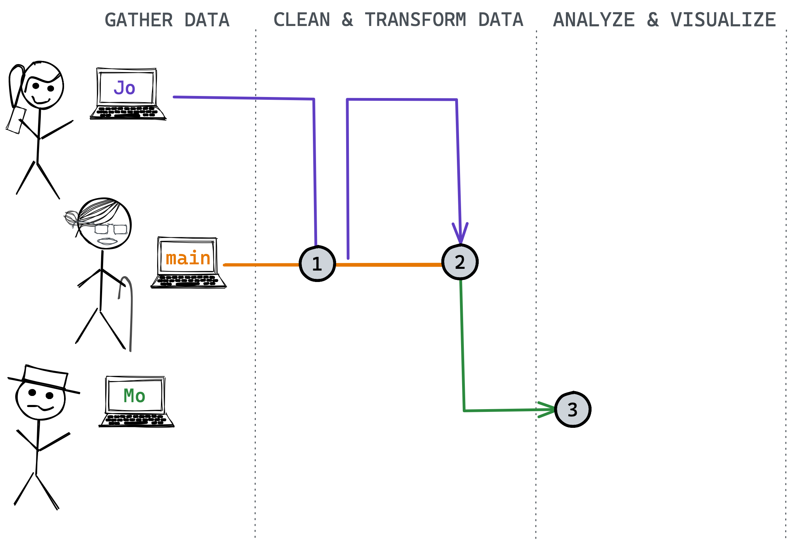
You Try!
Take the following code from Mo and:
pullchanges into the repository so everything is up-to-date!
- create a unique branch:
mo_cleanviz
- save this code to a new script at
code/02_clean_visualize.R stageit (either through the Git tab, or viagit add),commit(add a message!),pushto Mo’s branch- Finish by adding a Pull Request and merging back to
main!
Answers!
Now we have a commit history that might look something like this.

What is one explanation for commit 4? We also have a project that is very easy to re-run and update, and it can be updated or integrated into a parameterized Rmarkdown report which could be shared and updated easily.
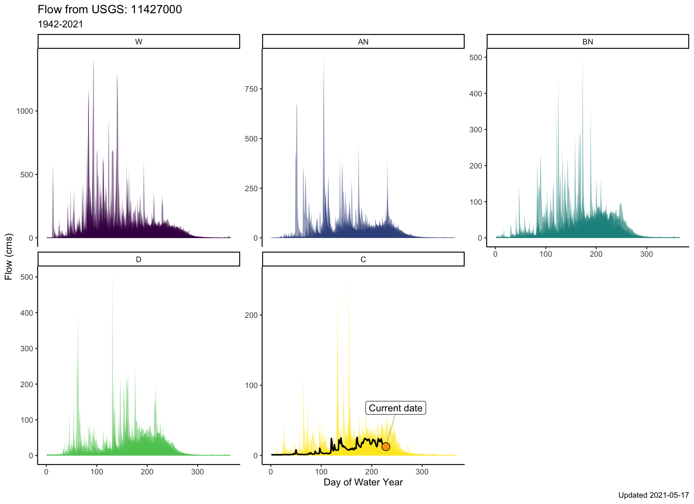
Closing the loop
We’ve reviewed how to create branches, add and revise files, and then commit and push these changes to a shared repository for collaborative projects. Importantly, it’s best practice to always pull/fetch at the beginning of each work session so you have the most-up-to-date changes. And if something needs to be fixed, you can always pull a specific branch and make a change and pull request for that branch before pull requesting and merging back to the main.
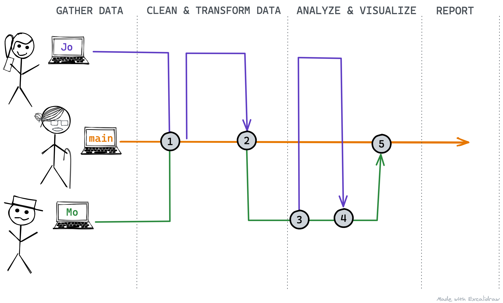
This is a simplified workflow, but it is very powerful. There are additional options within this workflow, like reverting to previous versions, pruning branches or git history, and more, but the core steps to successfully using version control rely on the material covered above, and practice!
Additional Git Details
Although there are many more details important to learning version control, many come with more practice and expertise. However, a few important tidbits:
- When working on Github, there are options for
privateandpublicrepositories.privaterepos are only visible to you and any collaborators you’ve added to your repo. Certain accounts permit unlimitedprivaterepos. .gitignore: We can access or create this file with theusethis::edit_git_ignore()function. Any file extension or specific file we include in our.gitignorefile will meangitignores it. This is helpful for hidden files or temporary files that may change a lot (i.e.,*.html) but aren’t necessary to version contol. You can even ignore entire directories or large files ( >= 100MB). Github is designed to version control scripts, not large amounts of data.
- Additionally you can use the
usethis::git_vaccinate()function to ensure there are no issues or secure files that may get accidentally added to your version control repository. - Large files…Github is great, but less ideal for large files. Github will complain with any file over about ~50MB, and anything greater than 100MB requires
git-lfs(large file sizes), but it is still unwieldy. See this article for suggestions and options.
Resources & Tutorials
- https://swcarpentry.github.io/git-novice/
- https://learngitbranching.js.org
Rfor excel with github- “Excuse me do you have a moment to talk version control?” by Jenny Bryan
- Github for project management
Previous module:
1. Updating R Next module:
3. Project Management
Github is not the only site that integrates with
gitto provide cloud-based version control. Other notable examples include Gitlab and Bitbucket. In this module, we will focus on Github, although the underlyinggitcommands you will learn are extensible to othergit-based repositories.↩︎If you ever need to edit your global/git profile, you can use a situation report,
usethis::git_sitrep()to see what settings exist and how to diagnose problems.↩︎see this excellent overview of the various ways to create/link an RStudio project with a Github repository↩︎
It’s a good idea to store all your github repositories in one place (e.g.,
~/Documents/Github). We recommend to avoid nestinggit/RStudio projects inside othergit/RStudio projects–this can create confusion and make it difficult to properly version control different projects. Each project should have its own repository (e.g.,~/Documents/Github/project_01,~/Documents/Github/project_02).↩︎In more complex workflows, we can pull branches into other branches before pulling them into the
mainbranch. In the module, we will use more simplified examples, but just remember that there are many other ways to branch and merge.↩︎https://docs.github.com/en/github/collaborating-with-issues-and-pull-requests/resolving-a-merge-conflict-on-github↩︎